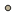

<!-- 
    Findings so far...

        FFMPEG utilizes GPU TO decode/encode videos. 
        The command for M series macbooks to convert a hvec video to mp4 is
        ./ffmpeg -i GX011120.MP4 -an -c:v h264_videotoolbox -q:v 50 output-file.mp4
        I got it from this website https://www.learnwithjason.dev/blog/hardware-acceleration-ffmpeg-apple-silicon/

        In order to run this command on a Windows Server with hopefully a Nvidia GPU will be similar but not the same
        Speed is slow on M series macbook without GPU
        At home testing on the 2060 Super should give us a better idea on how fast the server will run

        After 11/13/2024 
        Lets convert the videos we have to MP4 
        Parse them to get the GPS Data
        Add videos to our map dynamically 

        We will need to rewrite the script to encode our video to MP4 using CUDA
        This script should be able to drop in and replace our current M series parser

        Eventually the system will be dynamic and automatically convert videos save the GPS data,
        Store it inside of our server so that the map can be updated. 

        Images from the Mobile side should already contain GPS info
        Thumbnail images are pretty bare, lets use exfiltool to connect the cordinate data and thumbnail images
        My though on this is eventually we will have the YOLO model predict wether the thumbnail contains a crack 
        Then the model will return us some sort of metric to display the condition of the road

-->
<!doctype html>
<html lang="en">
    <head>
        <meta charset="utf-8">
        <meta http-equiv="X-UA-Compatible" content="IE=edge">
        <meta name="viewport" content="initial-scale=1,user-scalable=no,maximum-scale=1,width=device-width">
        <meta name="mobile-web-app-capable" content="yes">
        <meta name="apple-mobile-web-app-capable" content="yes">
        <link rel="stylesheet" href="css/leaflet.css">
        <link rel="stylesheet" href="css/cs_leaflet.css">
        <link rel="stylesheet" href="css/L.Control.Layers.Tree.css">
        <link rel="stylesheet" href="css/L.Control.Locate.min.css">
        <link rel="stylesheet" href="css/qgis2web.css">
        <link rel="stylesheet" href="css/fontawesome-all.min.css">
        <link rel="stylesheet" href="css/leaflet-control-geocoder.Geocoder.css">
        <style>
        html, body, #map {
            width: 100%;
            height: 100%;
            padding: 0;
            margin: 0;
        }
        </style>
        <title></title>
    </head>
    <body>
        <div id="map">
        </div>
        <script src="js/qgis2web_expressions.js"></script>
        <script src="js/leaflet.js"></script>
        <script src="js/L.Control.Layers.Tree.min.js"></script>
        <script src="js/L.Control.Locate.min.js"></script>
        <script src="js/leaflet.rotatedMarker.js"></script>
        <script src="js/leaflet.pattern.js"></script>
        <script src="js/leaflet-hash.js"></script>
        <script src="js/Autolinker.min.js"></script>
        <script src="js/rbush.min.js"></script>
        <script src="js/labelgun.min.js"></script>
        <script src="js/labels.js"></script>
        <script src="js/leaflet-control-geocoder.Geocoder.js"></script>
        <script src="uploads/map_data_1.js"></script>
        <script>
        var highlightLayer;
        function highlightFeature(e) {
            highlightLayer = e.target;

            if (e.target.feature.geometry.type === 'LineString' || e.target.feature.geometry.type === 'MultiLineString') {
              highlightLayer.setStyle({
                color: 'green',
              });
            } else {
              highlightLayer.setStyle({
                fillColor: 'green',
                fillOpacity: 1
              });
            }
            highlightLayer.openPopup();
        }
        var map = L.map('map', {
            crs: L.CRS.EPSG3857,
            zoomControl:false, maxZoom:28, minZoom:1
        }).fitBounds([[39.72971935308678,-121.8435031869709],[39.730766559320486,-121.84034480923208]]);
        var hash = new L.Hash(map);
        map.attributionControl.setPrefix('<a href="https://github.com/tomchadwin/qgis2web" target="_blank">qgis2web</a> &middot; <a href="https://leafletjs.com" title="A JS library for interactive maps">Leaflet</a> &middot; <a href="https://qgis.org">QGIS</a>');
        var autolinker = new Autolinker({truncate: {length: 30, location: 'smart'}});
        
        // remove popup's row if "visible-with-data"
        function removeEmptyRowsFromPopupContent(content, feature) {
         var tempDiv = document.createElement('div');
         tempDiv.innerHTML = content;
         var rows = tempDiv.querySelectorAll('tr');
         for (var i = 0; i < rows.length; i++) {
             var td = rows[i].querySelector('td.visible-with-data');
             var key = td ? td.id : '';
             if (td && td.classList.contains('visible-with-data') && feature.properties[key] == null) {
                 rows[i].parentNode.removeChild(rows[i]);
             }
         }
         return tempDiv.innerHTML;
        }

        // add class to format popup if it contains media
		function addClassToPopupIfMedia(content, popup) {
			var tempDiv = document.createElement('div');
			tempDiv.innerHTML = content;
			if (tempDiv.querySelector('td img')) {
				popup._contentNode.classList.add('media');
					// Delay to force the redraw
					setTimeout(function() {
						popup.update();
					}, 10);
			} else {
				popup._contentNode.classList.remove('media');
			}
		}
        var zoomControl = L.control.zoom({
            position: 'topleft'
        }).addTo(map);
        L.control.locate({locateOptions: {maxZoom: 19}}).addTo(map);
        var bounds_group = new L.featureGroup([]);
        function setBounds() {
        }
        map.createPane('pane_OSMStandard_0');
        map.getPane('pane_OSMStandard_0').style.zIndex = 400;
        var layer_OSMStandard_0 = L.tileLayer('http://tile.openstreetmap.org/{z}/{x}/{y}.png', {
            pane: 'pane_OSMStandard_0',
            opacity: 1.0,
            attribution: '<a href="https://www.openstreetmap.org/copyright">© OpenStreetMap contributors, CC-BY-SA</a>',
            minZoom: 1,
            maxZoom: 28,
            minNativeZoom: 0,
            maxNativeZoom: 19
        });
        layer_OSMStandard_0;
        map.addLayer(layer_OSMStandard_0);
        function pop_map_data_1(feature, layer) {
    // Extract video path and data file path from feature properties
    var videoPath = feature.properties.videoPath; // e.g., "data/videos/VIDEO_DIRECTORY/VIDEO.MP4"
    var dataFilePath = feature.properties.dataFilePath; // e.g., "data/videos/VIDEO_DIRECTORY/VIDEO_DATA.json"

    // Popup content with an embedded video player
    var popupContent = `
        <div style="position: relative; width: 500px; height: auto;">
            <video id="popupVideo" width="500" controls muted>
                <source src="${videoPath}" type="video/mp4">
                Your browser does not support the video tag.
            </video>
        </div>`;

    var content = removeEmptyRowsFromPopupContent(popupContent, feature);

    // Bind the popup to the layer
    layer.bindPopup(content, {
        maxHeight: 400,
        maxWidth: 550,
        autoClose: false,
        closeOnClick: false,
        offset: L.point(-100, -100),
    });

    // On click, open the popup
    layer.on('click', function () {
        layer.openPopup();
        var visibleVideoElement = document.getElementById('popupVideo');

        // Fetch the GPS data JSON file
        fetch(dataFilePath)
            .then((response) => response.json())
            .then((data) => {
                // Extract GPS coordinates
                var coordinates = data.features.map((f) => [
                    f.geometry.coordinates[1], // Latitude
                    f.geometry.coordinates[0], // Longitude
                ]);

                console.log("Coordinates loaded:", coordinates); // Debugging

                // Add polyline to the map
                var polyline = L.polyline(coordinates, { color: 'red', weight: 3 }).addTo(map);

                // Add the animated marker (red car icon)
                var redCarIcon = L.icon({
                    iconUrl: 'markers/red_car.png',
                    iconSize: [75, 45],
                    iconAnchor: [20, 40],
                });

                var animatedMarker = L.marker(coordinates[0], { icon: redCarIcon }).addTo(map);

                // Sync animation with video playback
                visibleVideoElement.addEventListener('loadedmetadata', function () {
                    var totalSegments = coordinates.length - 1;
                    var segmentDuration = visibleVideoElement.duration / totalSegments;

                    visibleVideoElement.addEventListener('timeupdate', function () {
                        var currentTime = visibleVideoElement.currentTime;
                        var currentSegment = Math.floor(currentTime / segmentDuration);
                        var nextSegment = Math.min(currentSegment + 1, coordinates.length - 1);

                        if (currentSegment < totalSegments) {
                            var segmentTime = currentTime % segmentDuration;
                            var t = segmentTime / segmentDuration;

                            var lat = coordinates[currentSegment][0] * (1 - t) + coordinates[nextSegment][0] * t;
                            var lng = coordinates[currentSegment][1] * (1 - t) + coordinates[nextSegment][1] * t;

                            animatedMarker.setLatLng([lat, lng]);
                        }
                    });
                });
            })
            .catch((error) => {
                console.error('Error loading GPS data:', error); // Debugging
            });
    });

    // Cleanup on popup close
    layer.on('popupclose', function () {
        map.eachLayer(function (layer) {
            if (layer instanceof L.Polyline || layer instanceof L.Marker) {
                map.removeLayer(layer);
            }
        });
    });
}


        function style_map_data_1_0() {
            return {
                pane: 'pane_map_data_1',
                radius: 4.0,
                opacity: 1,
                color: 'rgba(35,35,35,1.0)',
                dashArray: '',
                lineCap: 'butt',
                lineJoin: 'miter',
                weight: 1,
                fill: true,
                fillOpacity: 1,
                fillColor: 'rgba(190,178,151,1.0)',
                interactive: true,
            }
        }
        map.createPane('pane_map_data_1');
        map.getPane('pane_map_data_1').style.zIndex = 401;
        map.getPane('pane_map_data_1').style['mix-blend-mode'] = 'normal';
        var layer_map_data_1 = new L.geoJson(json_map_data_1, {
            attribution: '',
            interactive: true,
            dataVar: 'json_map_data_1',
            layerName: 'layer_map_data_1',
            pane: 'pane_map_data_1',
            onEachFeature: pop_map_data_1,
            pointToLayer: function (feature, latlng) {
                var context = {
                    feature: feature,
                    variables: {}
                };
                return L.circleMarker(latlng, style_map_data_1_0(feature));
            },
        });
        bounds_group.addLayer(layer_map_data_1);
        map.addLayer(layer_map_data_1);
        var osmGeocoder = new L.Control.Geocoder({
            collapsed: true,
            position: 'topleft',
            text: 'Search',
            title: 'Testing'
        }).addTo(map);
        document.getElementsByClassName('leaflet-control-geocoder-icon')[0]
        .className += ' fa fa-search';
        document.getElementsByClassName('leaflet-control-geocoder-icon')[0]
        .title += 'Search for a place';
        var overlaysTree = [
            {label: ' map_data', layer: layer_map_data_1},
            {label: "OSM Standard", layer: layer_OSMStandard_0, radioGroup: 'bm' },]
        var lay = L.control.layers.tree(null, overlaysTree,{
            //namedToggle: true,
            //selectorBack: false,
            //closedSymbol: '&#8862; &#x1f5c0;',
            //openedSymbol: '&#8863; &#x1f5c1;',
            //collapseAll: 'Collapse all',
            //expandAll: 'Expand all',
            collapsed: false, 
        });
        lay.addTo(map);
		document.addEventListener("DOMContentLoaded", function() {
            // set new Layers List height which considers toggle icon
            function newLayersListHeight() {
                var layerScrollbarElement = document.querySelector('.leaflet-control-layers-scrollbar');
                if (layerScrollbarElement) {
                    var layersListElement = document.querySelector('.leaflet-control-layers-list');
                    var originalHeight = layersListElement.style.height 
                        || window.getComputedStyle(layersListElement).height;
                    var newHeight = parseFloat(originalHeight) - 50;
                    layersListElement.style.height = newHeight + 'px';
                }
            }
            var isLayersListExpanded = true;
            var controlLayersElement = document.querySelector('.leaflet-control-layers');
            var toggleLayerControl = document.querySelector('.leaflet-control-layers-toggle');
            // toggle Collapsed/Expanded and apply new Layers List height
            toggleLayerControl.addEventListener('click', function() {
                if (isLayersListExpanded) {
                    controlLayersElement.classList.remove('leaflet-control-layers-expanded');
                } else {
                    controlLayersElement.classList.add('leaflet-control-layers-expanded');
                }
                isLayersListExpanded = !isLayersListExpanded;
                newLayersListHeight()
            });	
			// apply new Layers List height if toggle layerstree
			if (controlLayersElement) {
				controlLayersElement.addEventListener('click', function(event) {
					var toggleLayerHeaderPointer = event.target.closest('.leaflet-layerstree-header-pointer span');
					if (toggleLayerHeaderPointer) {
						newLayersListHeight();
					}
				});
			}
            // Collapsed/Expanded at Start to apply new height
            setTimeout(function() {
                toggleLayerControl.click();
            }, 10);
            setTimeout(function() {
                toggleLayerControl.click();
            }, 10);
            // Collapsed touch/small screen
            var isSmallScreen = window.innerWidth < 650;
            if (isSmallScreen) {
                setTimeout(function() {
                    controlLayersElement.classList.remove('leaflet-control-layers-expanded');
                    isLayersListExpanded = !isLayersListExpanded;
                }, 500);
            }  
        });       
        setBounds();

        </script>
    </body>
</html>
